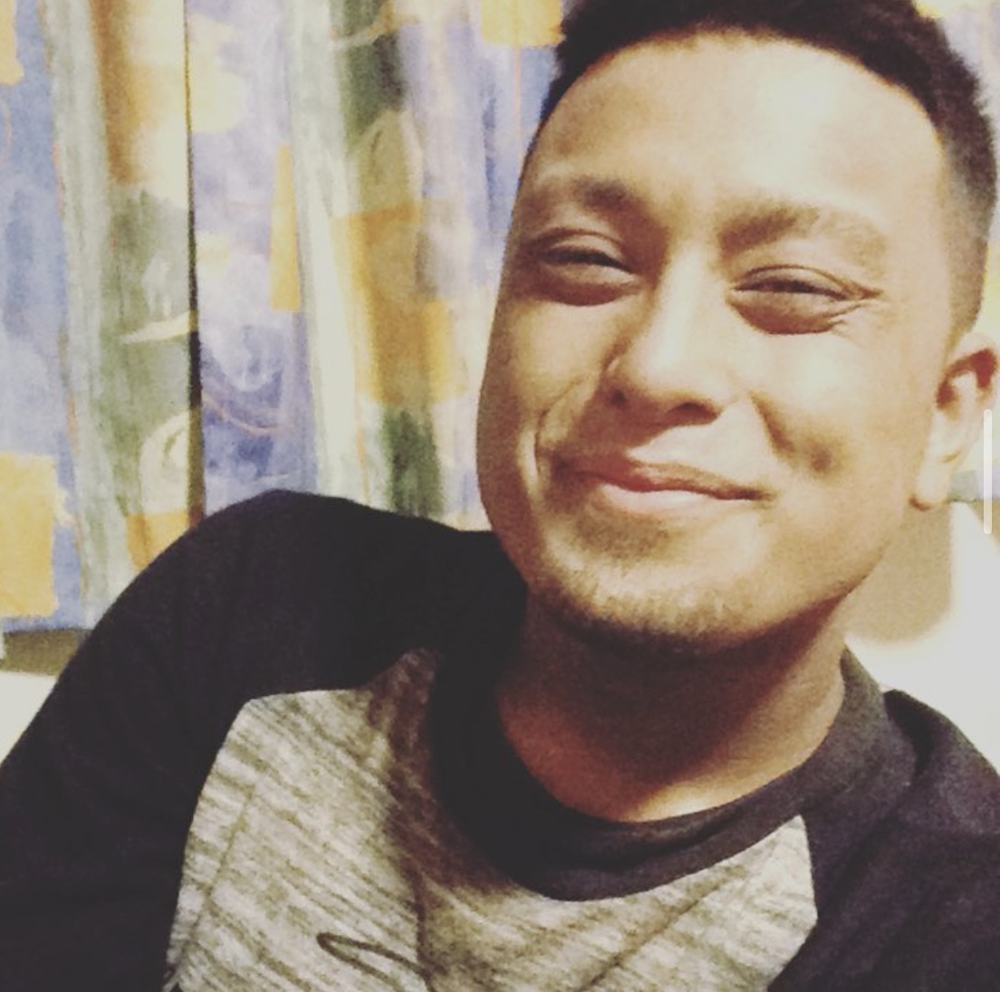

Welcome to this website which will contain information about myself Inayat Islam. This website will contain all information about myself which will include; my qualifications, strengths and weaknesses. I have designed this web page with numerous amount of skills. I have made sure that this page isnt too much or too less.
| Full name: | Inayat Islam (Reus) |  |
| Date of birth: | 03/11/1998 | |
| Place of birth: | Birmingham UK | |
| Current city: | Newcastle under lyme | |
| Email address: | inayatreus@gmail.com | |
| Currently studying at : | Stafforshire University computer science BSc hons |
| SHALIMAR RESTRUANT 2015- 2017: | The shalimar restruant was my first job, this job gave me a major inside about the working field. I first started off with catering and once I had turned 18 my role was a bartender.I gained many skills during this time such as working under pressure, money handeling and communication skills. |
| WBA FC 2018 - PRESENT: | I am a bartender at WBA football stadium working every home match on weekends. Some of the skills that I have gained by working in this field is communication with others. I have learnt that one of the best ways to succeed in a job is to have good communication with others around. |
| RED INDUSTRIES PLACEMENT JULY 2018 -SEP 2018 : | This job was a placement at red industries. This was a chemical organisation who dealt with waste management. My role whilst working for red industries was to sort out all of the main admin work, help with commerical and also attending the lab and doing different types of test. One of the main skills that I had gained from this was to always hand in work in time, if not then every person who is working for the organisation will be behind. |